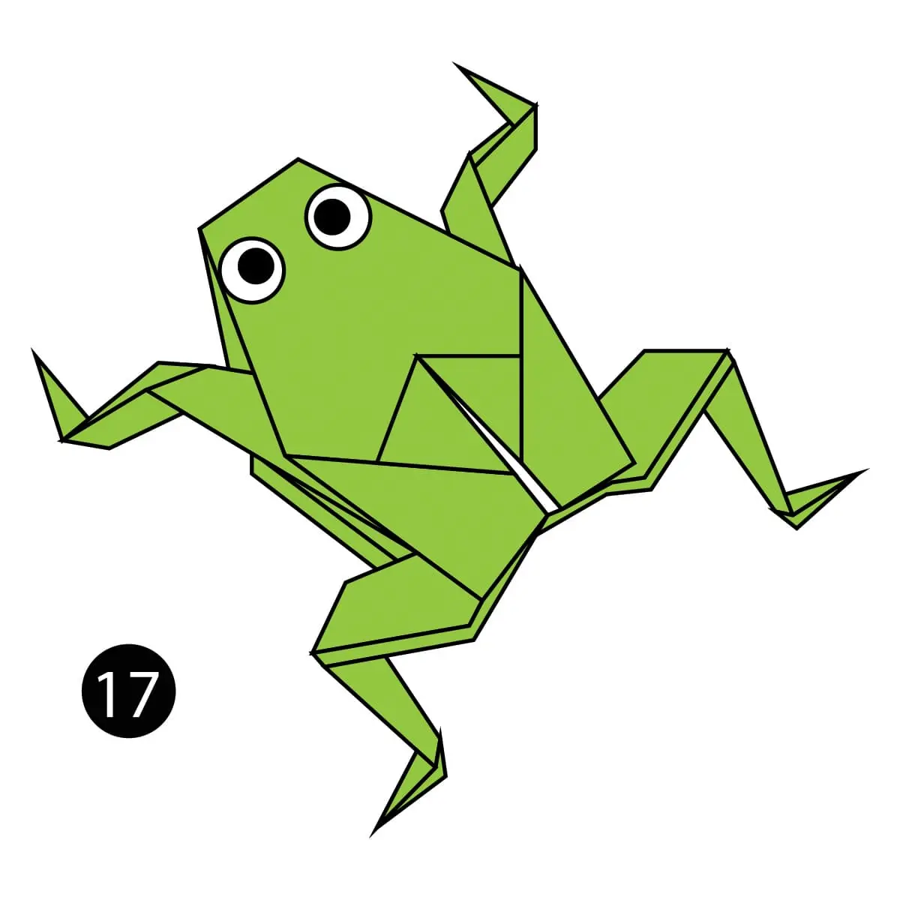

Camel
- Camel's ears are furry.
- Camels can move easily across the sand because of its specially designed feet.
- When they find water, they will drink as much as possible.

Chameleon
- Chameleons are reptiles that are part of the iguana suborder.
- Changing skin color is an important part of communication among chameleons.
- Most chameleons have a prehensial tail that they use to wrap around tree branches.

Pigeon
- Pigeons are highly sociable animals. They will often be seen in flocks of 20-30 birds.
- Pigeons mate for life, and tend to raise two chicks at the same time.
- They can find their way back to their nest from 1300 miles away.

Bear
- Bears are extraordinarily intelligent animals. They have far superior navigation skills to humans.
- Some species of Asiatic bear build nests in the trees. They can use these for hiding, eating and even sleeping.
- Bears grieve deeply for others. Cubs are known to moan and cry when separated from their mothers.

Panda
- Like domestic cats, giant pandas have vertical slits for pupils.
- Pandas have six fingers on each paw.
- Pandas value alone time.

Cicada
- They can buzz louder than a lawnmower.
- More than 3,000 Cicada subspecies exist.
- Their wings repel water and bacteria.

Dog
- A dog’s nose print is unique, much like a person’s fingerprint.
- A dog's nose has as many as 300 million receptors. In comparison, a human nose has about 5 million.
- Greyhounds (a type of dog) can beat cheetahs in a race.

Cicada
- Frogs drink water through their skin.
- A frog’s eyes and nose are on the very top of their heads.
- Frogs have roamed the Earth for more than 200 million years.